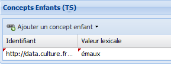

Édition d'un Concept
ÉcranÉditer un concept⚓
RéglementaireAfficher le Concept⚓
Pour afficher le Concept dans la zone de travail :
Double-cliquez sur le nom du
Conceptdans l'explorateur,ou,
Sélectionnez le
Conceptdans l'explorateur puis cliquez surAfficher sélection.
AttentionImportant⚓
Les champs suivis d'un astérisque rouge sont obligatoires.
- 1 Élément actif (Concept)
- 2 Enregistrer
Cliquez sur le bouton

Enregistrerpour sauvegarder vos modifications.RemarqueRemarque⚓
Dans la zone d'édition, un triangle rouge indique les données modifiées qui n'ont pas encore été enregistrées.

- 3 Supprimer
Cliquez sur le bouton

Supprimerpour supprimer cet élément du vocabulaire.AttentionAttention⚓
Ce bouton n'est disponible que lorsque le statut est
CandidatouRejeté. - 4 Exporter une branche
ComplémentEn savoir plus...⚓
Pour en savoir plus : Export d'une branche
- 5 Métadonnées
Les métadonnées descriptives du
Conceptpeuvent être de 2 types :Automatiques : elles sont créées et mises à jour automatiquement ;
Manuelles : c'est à vous de les paramétrer.
RéglementaireAfficher les métadonnées⚓
Pour afficher ou masquer les métadonnées, cliquez sur le bouton
 , à droite de la barre de titre
, à droite de la barre de titre Métadonnées. - 6 Concept TT
Permet de déclarer ou non le
Conceptcomme Terme de tête[1].ComplémentEn savoir plus...⚓
Pour en savoir plus : Concepts TT
- 7 Statut du Concept
Un
Conceptpeut avoir plusieurs statuts. Ces statuts sont exploités dans les exports et sont une indication précieuse pour les utilisateurs du vocabulaire publié.RéglementaireStatuts possibles d'un Concept⚓
Le statut...
...désigne un concept...
Valide
actuellement en usage et conseillé.
Candidat
en attente d'un décision ; il sera soit
Validé, soitRejeté.Il s'agit souvent d'un concept proposé par des utilisateurs ou des contributeurs et qui nécessite un processus de validation.
(ce statut rend possible la suppression du Concept ; il ne peut être attribué qu'aux Concepts n'ayant aucune relation hiérarchique ou associative)
Rejeté
qui n'a pas été validé.
(ce statut rend possible la suppression du Concept)
Déprécié
qu'il est conseillé de ne plus utiliser pour l'indexation.
Prohibé
qu'il est interdit d'utiliser pour l'indexation.
RéglementaireNouveaux Concepts⚓
Le statut par défaut des nouveaux
Conceptsdépend du rôle de l'utilisateur qui le créé :Si je suis...
... alors, un nouveau Concept est...
ResponsableouAdministrateurValide
ExpertCandidat
RéglementaireChanger le statut d'un Concept⚓
Le statut d'un
Conceptpeut être modifié par le responsable ou l'administrateur du vocabulaire.Pour changer le statut du
Concept:Dans les métadonnées du
Concept, cliquez sur la flèche du menu déroulantStatut du concept.> Un menu déroulant apparaît.
Sélectionnez le statut de votre choix.
Enregistrez vos modifications.
> Le statut du
Conceptest modifié.
- 8 Notation
La notation est principalement utilisée dans les classifications pour représenter un
Conceptsous une forme codifiée. La notation peut également être utilisée dans les éditions pour trier lesConceptsdans un ordre déterminé différent de l'ordre alphabétique. - 9 Attributs personnalisés
Exemple d'attributs personnalisés.
- 10 Liste des termes
Chaque ligne représente un
Termequi exprime leConcept.RéglementaireTerme préférentiel et Terme caché⚓
Le cas échéant, cochez la
case correspondantepour définir, au choix, unTermecomme :RéglementaireRègles relatives aux Termes préférentiels du Concept⚓
Gardez toujours en tête les règles suivantes pour la liste des termes d'un
Concept:Un
Conceptdoit obligatoirement avoir un Terme préférentiel[3] pour exister (et pouvoir être enregistré) ;Un
Conceptpeut être exprimé par différentsTermes(préférentiels ou non) mais il ne peut avoir qu'un Terme préférentiel dans chacune des langues du vocabulaire. Autrement dit, il peut avoir plusieurs Termes préférentiels, à condition que ces derniers appartiennent à des langues différentes.
ComplémentEn savoir plus...⚓
Pour en savoir plus : Termes du Concept
- 11 Concepts parents
Chaque ligne représente un
Concept parent(Générique) duConcept.RemarqueRemarque⚓
Dans le cas d'un thésaurus mono-hiérarchique, cette zone ne contient qu'une seule ligne, qui correspond au concept parent du concept actif.
ComplémentEn savoir plus...⚓
Pour en savoir plus : Relations hiérarchiques ou associatives
- 12 Concepts enfants
Chaque ligne représente un
Concept enfant(Spécifique) duConcept.ComplémentEn savoir plus...⚓
Pour en savoir plus : Relations hiérarchiques ou associatives
- 13 Concepts de tête
Le
Concept de têtecorrespond auConceptde premier niveau de la branche à laquelle appartient le concept concerné. Il fournit un élément de contexte sémantique qui peut être exploité sur les plates-formes de diffusion, en particulier en l'absence d'une présentation hiérarchique.Il est généré automatiquement lorsqu'une relation hiérarchique est créée entre deux
Concepts. - 14 Concepts associés
Chaque ligne représente un
Concept associé[5] auConcept.ComplémentEn savoir plus...⚓
Pour en savoir plus : Relations hiérarchiques ou associatives
- 15 Alignements
Chaque ligne représente une relation du
Conceptavec unConceptexterne au vocabulaire, ouAlignement[6].ComplémentEn savoir plus...⚓
Pour en savoir plus : Alignements
- 16 Fiche concept
L'onglet
Fiche conceptpermet de paramétrer et structurer leConcept.Dans cet exemple, c'est l'onglet actif dans la zone d'édition.
- 17 Notes du Concept
- 18 Suggestions
Permet d'afficher les Suggestions[8] associées au
Conceptdans la zone d'édition.Voir : Suggestions
{kind=link}
{kind=link}
{kind=link}
{kind=link}
{kind=link}
{kind=link}
{kind=link}
{kind=link}
{kind=link}
{kind=link}
{kind=link}
{kind=link}
{kind=link}
{kind=link}
{kind=link}
{kind=link}
{kind=link}
{kind=link}